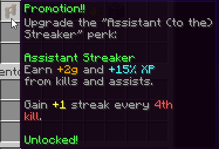

| The Pit 1.0.5 - Tryhard Patch |
|  |
| The new Insurance perk. |
| Release Date | Nov 18th, 2021 |
| Forums Approval | 73.7% |
| Forums Author | Minikloon |
| ← No-Rage Patch — Bonk Patch →
|
The Pit 1.0.5 was a patch for the Hypixel Pit. It introduced the Insurance perk, balance changes, bug fixes, and other minor changes.
The Endless Quiver perk's name was changed to Insurance. Its arrow-return mechanic was moved to the Spammer perk. The Insurance perk would supposedly return full health to the player and grant Resistance II (0:04) if they died within 2 seconds of first being attacked. However, the perk did not work as intended, sometimes reviving the player far earlier than intended, and sometimes reviving the player on death despite it being far longer than 2 seconds since they were first attacked.
A new Rage Pants enchantment, Ace of Spades, was added. It reduces damage taken from players using Combat Spades.
Some major features were reworked:
- The Promotion!! renown upgrade no longer saves mystics' lives above a 50 kill streak. It now gives +2g and +15% XP on kills and assists, and adds 1 to to user's killstreak on every fourth kill while the Assistant to the Streaker perk is equipped.
- The Withercraft killstreak has been renamed to Rush and reworked, now activating every 5 kills and giving the user +1.5% speed every activation, up to +15%.
- The Grand Finale megastreak has been renamed to Magnum Opus, requires 50 kills (down from 100), and now also consumes up to 4 Chunks of Vile to repair up to 4 lives on the item in the Mystic Well. (It was intended to consume double the vile for items that have had a Totally Legit Gem applied, but this feature did not work.)
Balance changes:
- (↑) Spammer's gold boost has been increased from +100% to +200%.
- (↑) Golden Pickaxes have been removed from the Renown Shop. They are now available in the Item Shop for 500g. New Golden Pickaxes have unlimited durability and instantly break 5-block pillars of obsidian after clicking twice on them. Players who unlocked the old Golden Pickaxe could have 10 renown refunded.
- (↑) Telebow's cooldown is reset if the user attempted to teleport out of bounds.
- (↑) Diamond Allergy now protects from Combat Spades.
- (↑) Chipping now deals (half → double) the damage it is intended to. This was changed at an unknown later date to the intended value.
- (↑) What doesn't kill you's cooldown is now correctly set to 3 seconds.
- (↑) Peroxide now instantly heals the player when hit instead of granting Regeneration.
- Peroxide I: When hit, gain (Regeneration I (0:05) → 0.5♥, 1s cooldown).
- Peroxide II: When hit, gain (Regeneration I (0:08) → 0.7♥, 1s cooldown).
- Peroxide III: When hit, gain (Regeneration II (0:08) → 1.0♥, 1s cooldown).
- (↑) New instances of the following special items now have increased lives:
- (↑) Iron and Diamond boots on the ground no longer override Armageddon Boots when picked up.
- (↓) First-Aid Egg cooldown (10 → 30 seconds), now reduces cooldown by 5 seconds on kill and removes the Speed effect from the user on use.
- (↓) Iron Pack no longer has a helmet.
- (↓) Divine Miracle now has reduced activation chances:
- Divine Miracle I: (15% → 10%) chance to save mystics' lives on death.
- Divine Miracle II: (30% → 20%) chance to save mystics' lives on death.
- Divine Miracle III: (45% → 30%) chance to save mystics' lives on death.
- (↓) Self-damage from Gamble cannot be mitigated anymore. Damage inflicted by the enchantment to others may still be avoided.
- (↓) Unknown changes to Retro-Gravity Microcosm cause the enchantment to no longer have any effect.
- (↓) Regularity now includes true damage inflicted in the calculation to determine if it activates, and the second strike no longer adds to Combo enchantments.
- (↓) Respawn Resistance now clears Resistance from the user if the pants are removed.
- (↓) Players may only receive rewards from Uberstreaks four times daily, costing 0, 5, 10, and 15 renown for each respective completion.
Other changes:
- Co-op Cat's position in the Renown Shop was changed to be in the same location as the Prestige I upgrades, but the requirement was not changed, despite the patch notes stating that it was.
- The Punch now applies 20s of immunity to streak resets from entering spawn.
- Players at Prestige I or higher may now toggle off receiving starting items when respawning (Iron Swords, Bows, Autobought Diamond Swords)
- Billionaire now accurately states that it provides an additive percent increase to damage in the description instead of misleadingly stating that it multiplies damage.
- The maximum Prestige has been increased to 50 (L).
- All prestige gold requirements have been reduced, and higher prestiges have a maximum requirement of 2,000,000 gold.
- Dying three times without getting a kill now grants a golden apple or equivalent healing item based on your active perks.
- Items in the Stash now lose lives on death.
- The /offer command now fails if the user adds more arguments than name and gold value, in order to prevent scams.
- Note blocks no longer appear as a block in the Blockhead event.
- Small cooldown added to all killstreak items in order to prevent accidentally consuming multiple at once.
- When a player is nicked, their Pit Supporter star is automatically hidden.
Some exploits were also fixed:
- Mystic items may not leave your inventory while on a megastreak or while the Magnum Opus megastreak is equipped. Logging out while on a megastreak will now also cause the player to lose lives in additino to causing a death.
- Leaving the game immediately after attacking someone now properly causes the user to lose lives on mystic items.
- The Gold Nano-factory killstreak's ingots do not turn into tickets when a Raffle event starts.
- Martyrdom can no longer activate above the pregame lobby (allowing creepers to push players out of spawn).
- Fixed a bug where players may respawn in the same location after dying, causing them to lose all items in their inventory.